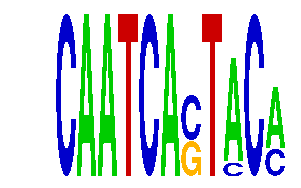

family_20 |
|---|
|  |
| Download PWM |
| Download instances (motifs) |
| Show motif distribution |
Query_ID | Query_Consensus | Subject_Name | Source_DB | Subject_ID | Length | Orientation | Offset | Divergence | Overlap | Subject_Consensus |
|---|---|---|---|---|---|---|---|---|---|---|
| family_20 | CAATCACTACA | GATTGGY | JASPAR | PF0005 | 7 | reverse-complement | -2 | 0.057 | 5 | GATTGGC |
| family_20 | CAATCACTACA | Sox5 | JASPAR | MA0087.1 | 7 | reverse-complement | -3 | 0.097 | 4 | ATTGTTN |
| family_20 | CAATCACTACA | WTTGKCTG | JASPAR | PF0046 | 8 | reverse-complement | -4 | 0.342 | 4 | ATTGGCTG |
| family_20 | CAATCACTACA | NFYB | JASPAR | MA0502.1 | 15 | as given | -8 | 0.643 | 7 | NNNYNRRCCAATCAG |
| family_20 | CAATCACTACA | DUX4 | JASPAR | MA0468.1 | 11 | as given | -5 | 0.846 | 6 | TAATYYAATCA |
Sequence | Start_position (from start) | Start_position (from end) | Average conservation | Best conservation score | Instance_with_best_CS | Best_Z-score | Instance_with_best_ZS | Strand |
|---|---|---|---|---|---|---|---|---|
| chr3:105176600-105180400 | 2934 | 2945 | 0.000454545 | 0.001 | CAATCASTACM | 14.270223 | CAATCASTMCA | 1 |
| chr18:5073600-5077590 | 829 | 840 | 0.00672727 | 0.016 | CAATCASTACM | 14.270223 | CAATCASTMCA | -1 |
| chr16:43871300-43872434 | 600 | 611 | 0.999364 | 1 | CAATCASTMCA | 14.270223 | CAATCASTMCA | 1 |
| chr5:31946600-31948500 | 477 | 488 | 0.0175455 | 0.04 | CAATCASTACM | 14.270223 | CAATCASTMCA | 1 |
| chr13:73419500-73422100 | 81 | 92 | 0.047 | 0.062 | CAATCASTACM | 14.270223 | CAATCASTMCA | 1 |
| chr15:94018606-94019700 | 731 | 742 | 0.00190909 | 0.003 | CAATCASTACM | 15.02267 | CAATCASTACM | 1 |
| chr10:6924700-6926457 | 409 | 420 | 0.00263636 | 0.008 | CAATCASTACM | 15.02267 | CAATCASTACM | 1 |
| chr2:76736449-76738500 | 354 | 365 | 0.341182 | 0.847 | CAATCASTACM | 15.02267 | CAATCASTACM | 1 |
| chr14:61124870-61125870 | 177 | 188 | 0.001 | 0.003 | CAATCASTACM | 15.02267 | CAATCASTACM | 1 |
| chr1:189697200-189698500 | 1213 | 1224 | 0.0371818 | 0.043 | CAATCASTACM | 14.270223 | CAATCASTMCA | 1 |
| chr9:41391436-41392600 | 648 | 659 | 1 | 1 | CAATCASTACM | 15.02267 | CAATCASTACM | 1 |
| chr13:44119200-44120800 | 209 | 220 | 0.0126364 | 0.054 | CAATCASTMCA | 14.270223 | CAATCASTMCA | 1 |
| chr13:29665500-29668100 | 363 | 374 | 0.000363636 | 0.001 | CAATCASTACM | 14.270223 | CAATCASTMCA | 1 |
| chr2:84304500-84305800 | 276 | 287 | 0.00790909 | 0.027 | CAATCASTACM | 14.270223 | CAATCASTMCA | 1 |
| chr4:87485600-87487300 | 679 | 690 | 0.00527273 | 0.012 | CAATCASTMCA | 15.02267 | CAATCASTACM | 1 |